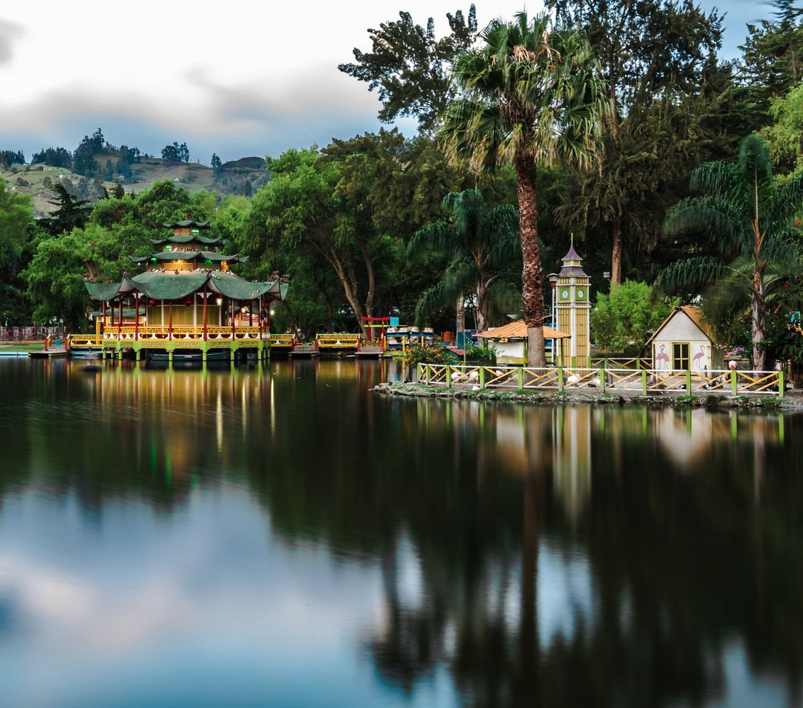
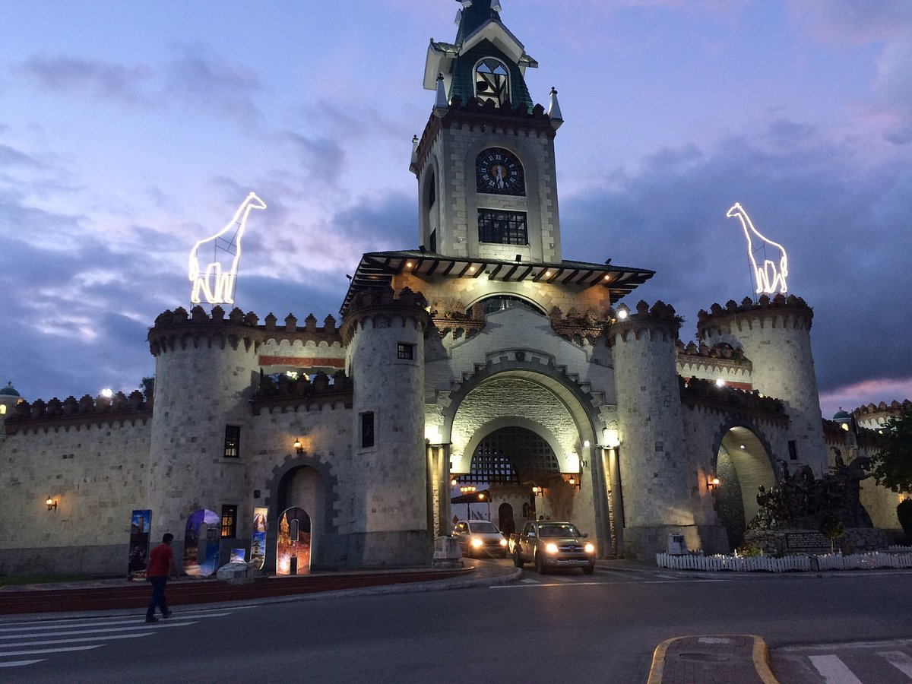
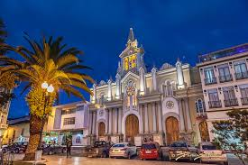
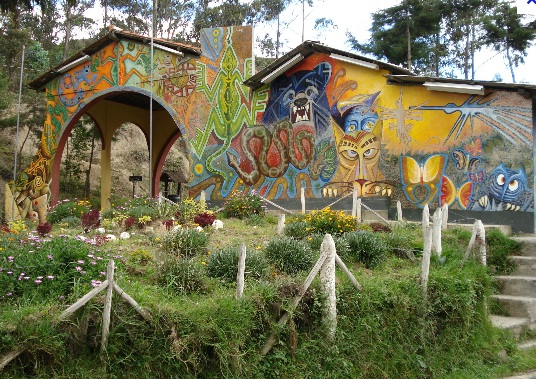
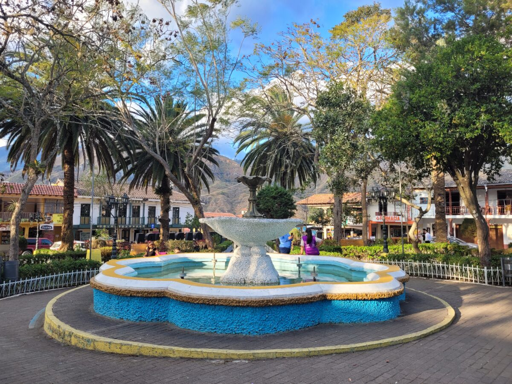
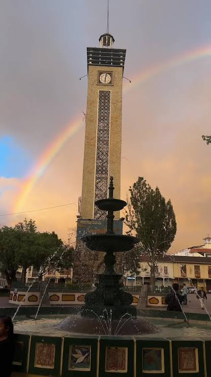

Parque Recreacional Jipiro
Espacio recreativo de Loja que cuenta con áreas verdes,
lagunas, senderos y representaciones arquitectónicas
inspiradas en diferentes culturas del mundo.
📍 Ubicación: Norte de la ciudad de Loja.
🎯 Actividad:
Caminatas, fotografía y recreación familiar.

Puerta de la Ciudad
Uno de los monumentos más representativos de Loja.
Su arquitectura recuerda una antigua puerta de acceso
y se ha convertido en un símbolo de la ciudad.
📍 Ubicación: Entrada norte de Loja.
🎯 Actividad:
Fotografía, recorridos culturales y observación
arquitectónica.

Catedral de Loja
Importante templo religioso ubicado en el centro
histórico de Loja. Es uno de los edificios
patrimoniales más conocidos de la ciudad.
📍 Ubicación: Plaza Central de Loja.
🎯 Actividad:
Turismo religioso, fotografía y recorrido
por el centro histórico.

Parque Nacional Podocarpus
Área natural protegida reconocida por su gran
biodiversidad, paisajes montañosos y variedad
de especies de flora y fauna.
📍 Ubicación: Zona sur del Ecuador,
cerca de Loja.
🎯 Actividad:
Senderismo, observación de naturaleza y fotografía.

Vilcabamba
Parroquia conocida por sus paisajes naturales,
clima agradable y entorno rural. Es un destino
ideal para descansar y disfrutar de la naturaleza.
📍 Ubicación:
Aproximadamente al sur de la ciudad de Loja.
🎯 Actividad:
Caminatas, ciclismo, naturaleza y turismo rural.

Plaza de San Sebastián
Lugar tradicional de Loja rodeado de edificios
históricos y espacios de encuentro. Su iglesia
y plaza forman parte del patrimonio cultural lojano.
📍 Ubicación:
Centro histórico de Loja.
🎯 Actividad:
Recorrido cultural, fotografía y gastronomía local.